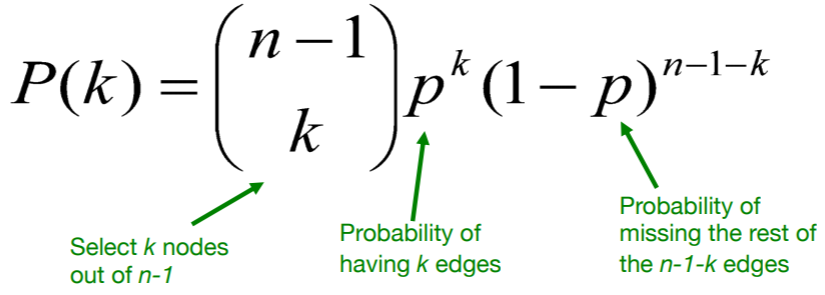
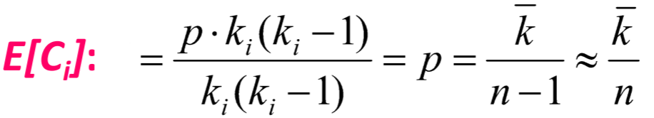
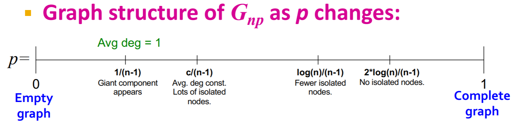
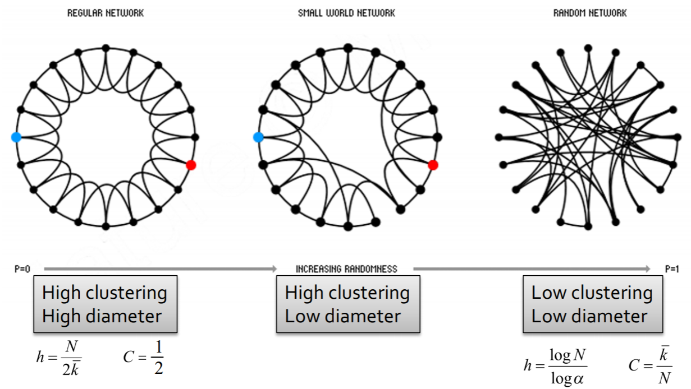
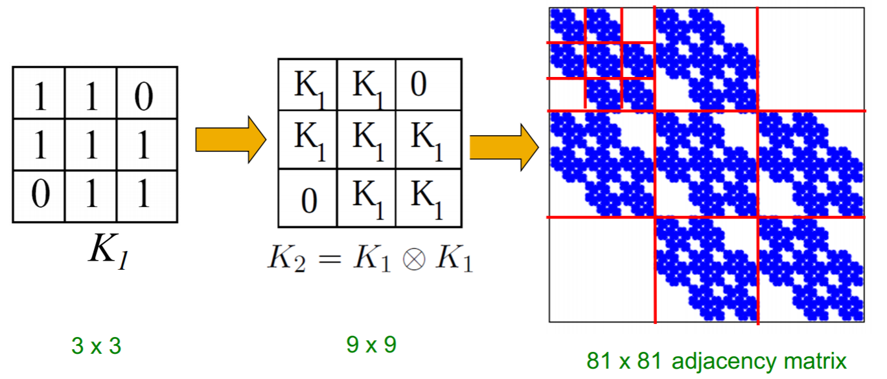
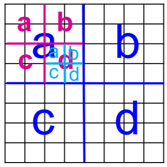
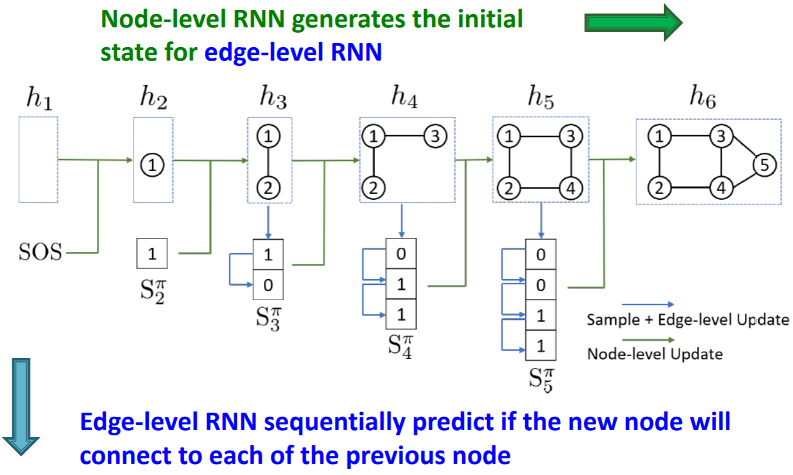
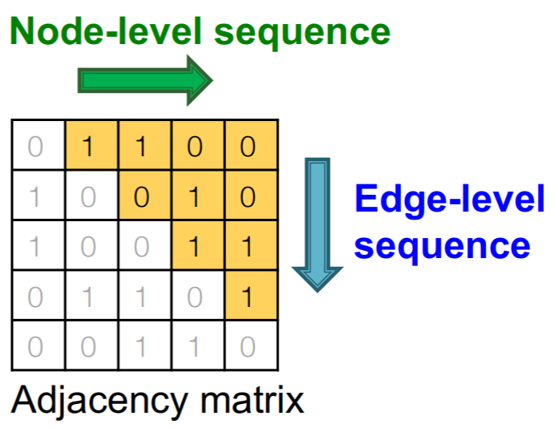
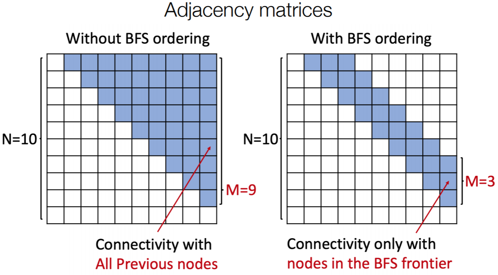

在之前的课程中，我们都是在考虑给定图上的学习任务，在这一节课我们会讨论如何生成图。
本文主要参考资料为CS224W的Lecture 14 & 15，课程视频可在Youtube观看。
研究图生成问题的动机主要有以下几方面：了解图的生成过程；预测当前的图随后会发生什么变化；模仿生成一些图片；判断图是否异常。
本节课分为三部分，首先会介绍现实中的图有什么性质，然后会介绍传统的图生成算法以及深度图生成算法。
Properties of Real-World Graphs
图的重要性质主要有四方面：度的分布、聚类系数、联通组成部分、路径长度。
度的分布$P(k)$描述的是图中任一节点度为$k$的概率。
聚类系数$C_{i}=\frac{2 e_{i}}{k_{i}\left(k_{i}-1\right)}$描述的是节点$i$周围邻居节点间的边与可能存在的边的数量的比值。
连接性描述的是最大连通子图的大小。
路径长度：直径描述节点间最大的路径长度、平均路径描述的是节点的平均距离。
Traditional Graph Generative Models
Erdos-Renyi Random Graphs
这里我们考虑拥有$n$个节点的无向图，每条边出现的概率为$p$，相同的$n$和$p$可以生成很多不同的图，ER图对应的四个图的性质的值分别如下。
度的分布是二项分布的

聚类系数的期望约等于平均度除节点数

最大连通部分随p的增加而变化，当平均度为1时开始出现较大的组成部分

当$\log n>n p>c$时，$\operatorname{diam}\left(G_{n p}\right)=O(\log n / \log (n p))$。对于给定的度，$np$是常数，直径在$log(n)$量级。
ER随机网络与实际网络相比，其度的分布是不同的，且聚类系数太低，没有兼顾到局部结构。且其连接性是一个phase transition的形式，而实际的图不论平均度是多少，大部分节点都是连接的。
The Small-World Model
Small-World模型考虑如何在保持高聚类系数的同时保证较短的路径长度。
其首先根据某些规则生成一个网络，如环，然后对每条边都采取一定的概率连接到其他点，当概率为1时就是ER模型

Kronecker Graph Model
Kronecker图模型考虑生成自相关的图，即给定一个邻接矩阵，对其做kronecker积生成更大的图

如果将邻接矩阵改为概率矩阵，就可以生成随机的kronecker图。在图过大时，可以不用判断每条边是否存在，而是采用采样的思想不断添加边

以上三种方法的图生成步骤都是提前假设好的，下面会介绍深度图生成，从原始数据直接学习图生成过程。
Deep Graph Generative Models
深度图生成模型是在给定从某分布采样的一些图的情况下，来学习这个分布生成新的图。首先通过极大似然估计来学习图的分布，然后再进行采样。采样可以先从noise distribution中采样再经过一个深度神经网络输出图。
下面主要介绍一个自回归模型GraphRNN，同时用于分布估计和采样。
GraphRNN通过一系列的添加节点与边的操作来生成图，包含node-level和edge-level两阶段: node-level RNN生成初始状态, edge-level RNN接受初始状态预测新的节点是否与之前节点相连，当edge-level RNN输出EOS时停止生成

这个过程也可以看做是在逐渐补全一个邻接矩阵

在训练时每一步都是输入的真实值，损失函数采用交叉熵。对训练好的模型输入SOS，根据输出的概率采样就可以得到生成的图。
以上方法对于每一个新加入的节点，都会判断其与之前所有节点是否有边，为了减少计算复杂度，我们还可以采用广度优先搜索法，缩减需要判断的边的条数

对于结果的评价，可以采用一些图分布的统计量，如比较两个分布之间相似性的Earch Mover Distance和比较两个分布的集合之间相似性的Maximum Mean Discrepancy.